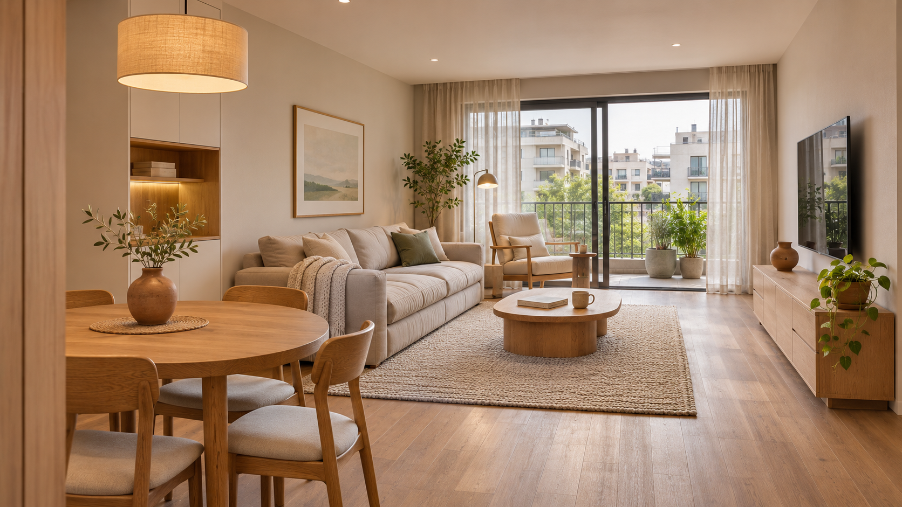
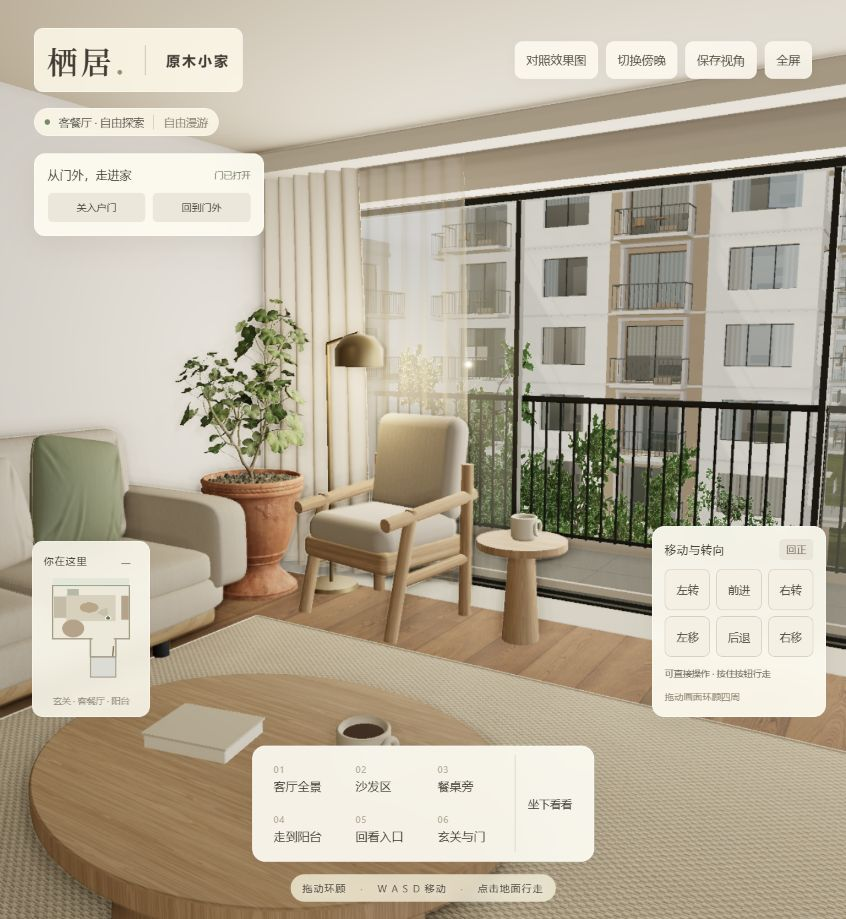
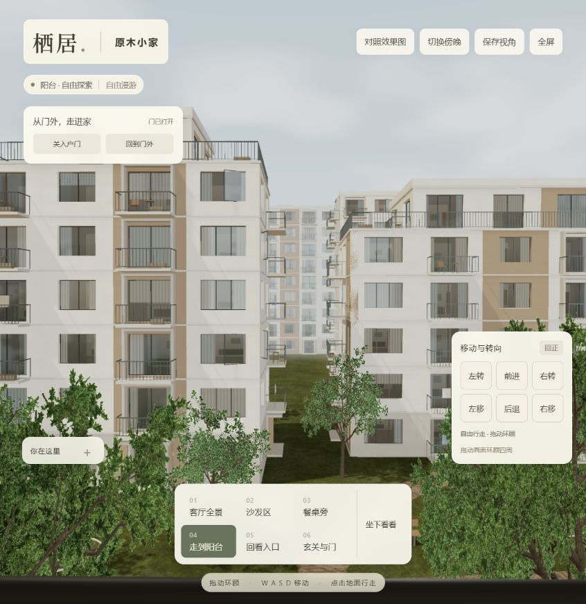

研究方向
从一次制作，走向重复生成。
以户型、关键尺寸和需求为入口，让AI选用标准资产并组织布局，由程序完成几何、约束和渲染，交付可检查的三维空间。
AI × 空间 × 可复用流程 公开整理 · 2026.11.21
从一套能走动的原木小家出发，研究怎样把模型的设计与编程能力，组织成可以反复使用的空间生成流程。
已有：单套可漫游原型 ／ 下一步：不同户型自动适配
当前房间根据效果参考图合理补建，未使用实测户型。网页尚未提供上传户型后自动生成或拖拽家具的编辑器。

研究方向
以户型、关键尺寸和需求为入口，让AI选用标准资产并组织布局，由程序完成几何、约束和渲染，交付可检查的三维空间。
已经做成
入户门、玄关、客餐厅、阳台与三维庭院；真实视点移动、门开合、电视开关、昼夜与微风，以及图形丢失后的恢复。
当前价值
已有运行代码、家具与材质、摆放修正、操作逻辑和验收记录。跨户型的稳定复用、人工省时和真实使用收益仍需测量。
01 / 探索效果
这三张图分别对应视觉目标、室内与窗外实景。后两张是此前内置浏览器保存的原始截图，保留界面和当时画面。
明确家具搭配、光色与氛围；这张静态参考本身不提供可走动的三维几何。

使用实体模型、材质和光照构建。可以转视角、走动、坐下；与参考图仍存在细节和写实程度差异。

七栋楼、十棵树和下层种植具有空间视差，部分窗灯、树叶与云层会变化；庭院和邻楼目前用于观察。
点击“开门并走进客厅”，再使用“04 走到阳台”。拖动环顾，WASD移动；E开关门，也可使用画面中的移动按钮。
原型包含较大的三维资产，首次加载与材质准备需要等待；建议先用桌面浏览器体验。当前能修改的是源码与场景参数；没有对外开放家具拖拽、换款和户型编辑器。实际行走区域为门外、玄关、客餐厅与阳台。
03 / 我们的理解
这次探索带来的关键判断，是把模型、素材、空间规则与运行工具的责任分清，再检验它们能否跨户型复用。
模型原有的理解、设计、编程和调试能力，结合Three.js、家具模型与贴图，完成了这套原型。我们没有训练一个新的图生3D模型，也没有改变模型权重。
目标入口是户型图、关键尺寸、门窗位置和装修需求。信息不全时先确认结构与尺度，再进入布局。当前这套房间按效果图补建，不能证明实测户型解析已完成。
固定模板保存一套摆法；可适配规则描述“沙发面对电视、家具落在支撑面上、门口和通道留出空间”。我们希望逐步形成后者，目前已经有部分实现和案例。
把输入要求、执行步骤、资产与代码工具、常见修正和验收标准放在一起，让后续任务沿用。当前留下了这些基础，尚未完成跨户型验证的通用技能包。
研究目标：给户型，生成可修改、可走进去体验的3D装修方案。当前成果是一套房间的能力样板，跨户型生成能力要通过新样本证明。
04 / 推荐路线
先统一场景描述与素材标准，再整理最小库和模板，边试跑不同户型边补充。统一流程与素材库同步迭代。
房间尺寸、门窗、风格与使用需求。
用统一单位描述对象、位置、朝向和材质。
提出方案，选择合适资产并调整布局。
检查支撑、碰撞、边界和可通行空间。
生成几何、配置光照，提供行走与操作。
检查实际画面、操作与性能，保留修正。
这是拟沉淀的目标流程。公开原型执行已经制作好的代码和资产，当前没有接入线上模型调用或户型自动生成服务。
墙体、地板、门窗、柜体等适合用尺寸和规则控制，便于跟随户型调整。
沙发、桌椅、电视等优先使用有真实尺寸、材质和清楚来源的模型，按适用范围选款。
需要时再生成、采购或制作新资产，经过视觉、尺寸和运行验收后入库；相关新增流程仍待实做。
| 对象 | 需要保存 | 希望解决的问题 |
|---|---|---|
| 桌子 | 真实长宽高、桌面高度、落地锚点、材质和碰撞范围 | 尺寸合适，椅子可用，桌面可承托物件 |
| 电视 | 屏幕尺寸、壁挂或落地方式、屏幕与玻璃材质、交互节点 | 安装位置合理，反射与开关行为可复用 |
| 花瓶与花盆 | 底部位置、占地、允许的支撑面、材质和来源 | 避免悬空、穿台面和越出台面边缘 |
| 沙发与窗帘 | 尺寸与朝向、布料细节、可调整参数、碰撞或悬挂边界 | 保留外形比例与材质质量，适应空间 |
| 所有资产 | 统一单位与坐标、版本、风格标签、复杂度、来源和许可 | 可检索、可追溯，并能在同一引擎内运行 |
全部临时生成适合探索，但这次比例、支撑与材质反复修改说明，重复交付还需要约束。大素材库能够积累资产，但资产齐全本身不能自动形成合理布局。当前更合适的试验是：用最小合格库和统一规则跑通新户型，再决定扩展范围。
如果目标是尽快承接现成装修业务，也可以评估成熟装修软件加AI辅助；需要另行确认自动化、导出、授权与实际交付要求。本研究尚未完成平台选型或集成。
05 / 价值与边界
当前可以确认已有产物和实现经验；效率提升、客户理解与商业收益需要独立验证。
留下家具与材质、行走和门交互、三维庭院、恢复机制、23项检查及原始记录。后续样本可以在这些基础上继续制作。
希望减少重复建模、摆放返工和视觉修正，让用户亲自观察比例、通道与视野。减少多少人工、是否改善沟通，尚未测量。
记录生成时长、人工修改量、误放和通行问题、冷加载与运行表现。用第二、第三套样本判断，价值能否超出素材与模板复用。
06 / 怎样把体验做实
以下是2026年11月15日的本机探索记录。公开整理和部署检查单独记录，不把历史结果当作所有设备上的保证。
按实际模型包围盒落地和支撑，补齐门、玄关与阳台通行；改进沙发、电视、布料、地毯、木材与三维窗外环境。
确认图形上下文丢失后原先缺少应用层恢复。增加暂停、提示、环境光与缓冲重建，以及保留位置和路线的自动重连。
取消长期低分辨率恢复配置，前后使用相同像素预算和抗锯齿；恢复时异步准备材质，预热后返回正常帧率。
边走动边转向与切换昼夜，并多次整圈环视。最终修正后的最后4轮检查点59–60 FPS，资源数量稳定；加载与恢复准备仍可能等待。
08 / 来源与继续研究